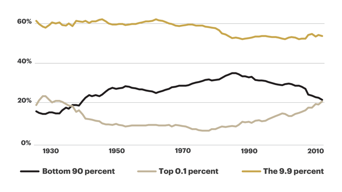
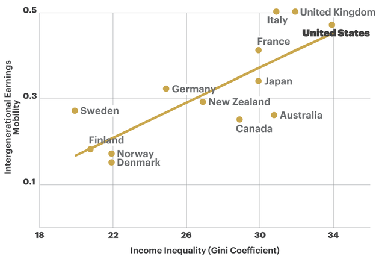

18 Classes
18.2 Imperiale Lebensweise
Den kapitalistischen Zentren bleibt dann nur noch der Versuch, ihre Lebensweise durch Abschottung und Ausgrenzung exklusiv zu stabilisieren. Damit bringen die Vertreter dieser Politik, die sich in der Regel selbst als „bürgerliche Mitte“ etikettieren, genau das hervor, was sie als ihren Widerpart begreifen: autoritäre, rassistische und nationalistische Bestrebungen. Dass diese derzeit überall erstarken, liegt auch daran, dass sie sich in der Krise als die eigentlichen, weil konsequenteren Garanten jener Exklusivität inszenieren können, die im Normalbetrieb der imperialen Lebensweise immer schon angelegt ist. Und im Unterschied zu ihren „bürgerlichen“ Konkurrenten vermögen sie ihrer Wählerschaft ein Angebot zu machen, das diese auf eine subalterne Position festlegt und sie gleichzeitig aus ihrer postdemokratischen Passivierung befreit. Nora Räthzel hat diesen Mechanismus im Hinblick auf den Rassismus, wie er sich im Deutschland der frühen 1990er Jahre artikulierte, treffend als „rebellierende Selbstunterwerfung“ bezeichnet. Den Akteuren wird es dabei ermöglicht, „sich als Handelnde in Verhältnissen zu konstituieren, denen sie ausgeliefert sind“.
Es reicht nicht mehr, eine „grüne Revolution“[11] oder einen neuen „Gesellschaftsvertrag“[12] einzufordern. Denn dies lässt, der starken Rhetorik zum Trotz, die politische Ökonomie der Probleme sowie die imperiale Lebensweise unangetastet. Auch greift es zu kurz, implizit oder explizit darauf zu setzen, dass „die Politik“ aus der unabweisbaren, da wissenschaftlich immer genauer belegten Tatsache der ökologischen Krise endlich die richtigen Konsequenzen zieht. Damit übersieht man, dass der Staat kein möglicher Gegenpol, sondern ein wesentlicher Garant für die institutionelle Absicherung der imperialen Lebensweise ist.
Stattdessen kommt es zunächst darauf an, die ökologische Krise als deutlichen Hinweis auf ein grundsätzlicheres Problem anzuerkennen: Die Produktions- und Konsumnormen des globalen Nordens, die sich mit dem Kapitalismus herausgebildet und schließlich verallgemeinert haben, lassen sich selbst in ihrer ökologisch modernisierten Variante nur auf Kosten von immer mehr Gewalt, ökologischer Zerstörung und menschlichem Leid aufrechterhalten – und auch dies nur in einem kleinen Teil der Welt. Aufgrund der autoritären, weiter auf Inwertsetzung der Natur und gesellschaftliche Spaltung setzenden Politik erleben wir derzeit eine beispiellose Anhäufung der Widersprüche. Die Reproduktion der Gesellschaft und ihrer biophysikalischen Grundlagen kann über den kapitalistischen Wachstumsimperativ immer weniger gesichert werden. Wir erleben eine Krise des Krisenmanagements, eine Hegemonie- und Staatskrise.
Swiss voting A few months ago, a majority of the Swiss population voted differently, but in vain. They voted to curb multinational corporations, and hold them accountable for human rights violations (including environmental damage) overseas. Sadly, this majority was not sufficient: a majority of cantons (regions) was also necessary, and this fell woefully short. A majority of people in the rural cantons, the places upheld as the heartland of traditional Swiss values by the far-right, voted to continue to allow multinational corporations based in Switzerland to violate human rights and degrade the environment overseas with complete impunity. Again, a few more Swiss francs are worth more than child labour or poisoning local populations. Nice values, eh? A modern religion of competition and domination
What can possibly explain the “multinational corporations should be free to conduct human rights abused with impunity” and the “ecocide in Indonesia is economically worth it” Swiss votes? Are a majority or large minority of Swiss people brutal, depraved criminals, who delight in harm to others, and rejoice when species go extinct? No, of course not. But then — why do they vote to support their economy to harm others and commit ecocide? I believe they vote this way because they are under the sway of a destructive economic creed, which in fact rules most of our world. This creed is very simple:
The well-being of myself, my family and my community is dependent, whether I like it or not, on the exploitation of other human beings and the destruction of nature.Or, put even more starkly:
You have to fuck people over to survive.This creed comes to us straight from colonial theories of social progress and evolution, passing through Darwinism and classical economics, which posit that competition (rather than cooperation) is the most fundamental characteristic of humans, or indeed life itself. According to these colonial theories, it is only competition, or selfish behaviour in markets, that leads to social progress. It is only competition which leads to innovation (=progress), because innovation is only ever pursued for competitive advantage. It is only a multiplicity of selfish actors behaving selfishly in markets that leads to the most efficient allocation of resources, interpreted as social welfare in classical economics. And in the natural world, evolution itself was presented as “survival of the fittest,” where the most “selfish gene” comes to dominate the whole pool.
18.3 Financialization of Politics
How to Rescue the Financial Industry at Public Expense.
Pagliari
Political economists have often drawn a hard line between the interests of owners of capital and the interests of labor. Yet over the past 30 years in Anglo-Saxon countries in particular, workers have become increasingly invested in capital markets activity through the privatization of pension systems and other incentives for market-based savings. In this article, we investigate whether this ‘financialization of everyday life’ has generated a convergence of policy preferences whereby individuals support policies traditionally associated with the financial sector. Using three separate datasets on the US population, we find evidence that financial asset ownership is associated with lower support for more stringent financial regulatory policy, and higher support for financial sector bailouts. Such effects on individual preferences are modest on average, but persist even when controlling for indicators of social class and a range of other conditions, circumstances and time periods.
To what extent the greater holding of financial securities has shaped the preferences of individuals toward different financial policies.
Whether the ‘financialization of everyday life’ has generated a convergence of policy preferences.
Conclusion
The ownership of financial assets is associated with lower levels of support for more stringent regulatory policies targeting the financial industry and higher levels of support for govern- ment intervention in support of the financial industry in the form of bailouts.
By turning individuals and households into ‘active’ investors whose personal wealth is tied to financial markets, the financialization of the economy has influenced cleavages over economic policies by contributing to the emergence of new constituencies backing the expansion of the financial markets.
Pagliari (2020) Financialization of policy preferences (pdf)
18.4 Elites
18.4.1 The New American Aristocracy
Memo
Understanding America’s evolving class system.
Perhaps the best evidence for the power of an aristocracy is the degree of resentment it provokes.
The meritocratic class has mastered the old trick of consolidating wealth and passing privilege along at the expense of other people’s children. We are not innocent bystanders to the growing concentration of wealth in our time. We are the principal accomplices in a process that is slowly strangling the economy, destabilizing American politics, and eroding democracy. We seem to be the last to notice just how rapidly we’ve morphed, or what we’ve morphed into. The arc of the narrative is simple: Once we were equal, but now we are divided.
Our delusions of merit now prevent us from recognizing the nature of the problem that our emergence as a class represents. We tend to think that the victims of our success are just the people excluded from the club. But history shows quite clearly that, in the kind of game we’re playing, everybody loses badly in the end.
We have left the 90 percent in the dust—and we’ve been quietly tossing down roadblocks behind us to make sure that they never catch up.
The 2010s look much like the 1920s
Economic mobility in the land of opportunity [US] is not high, and it’s going down. In America, the game is half over once you’ve selected your parents.
We are the people of good family, good health, good schools, good neighborhoods, and good jobs. We may want to call ourselves the “5Gs” rather than the 9.9 percent. We are so far from the not-so- good people on all of these dimensions, we are beginning to resemble a new species. The polite term for the process is assortative mating. Rising inequality decreases the number of suitably wealthy mates even as it increases the reward for finding one and the penalty for failing to do so. For most of us, the process is happily invisible.
It’s one of the delusions of our meritocratic class, however, to assume that if our actions are individually blameless, then the sum of our actions will be good for society.
A process that is creating two distinct forms of life in our society.
We prefer to signal our status by talking about our organically nourished bodies, the awe- inspiring feats of our offspring, and the ecological correctness of our neighborhoods. We have figured out how to launder our money through higher virtues.
We’re leaving the 90 percent and their offspring far behind in a cloud of debts and bad life choices that they somehow can’t stop themselves from making.
The Gatsby Curve has managed to reproduce itself in social, physiological, and cultural capital. Put more accurately: There is only one curve, but it operates through a multiplicity of forms of wealth.
Rising inequality does not follow from a hidden law of economics, as the otherwise insightful Thomas Piketty suggested when he claimed that the historical rate of return on capital exceeds the historical rate of growth in the economy. Inequality necessarily entrenches itself through other, nonfinancial, intrinsically invidious forms of wealth and power. We use these other forms of capital to project our advantages into life itself. We look down from our higher virtues in the same way the English upper class looked down from its taller bodies, as if the distinction between superior and inferior were an artifact of nature. That’s what aristocrats do.
According to a 2017 study, 38 elite colleges—among them five of the Ivies—had more students from the top 1 percent than from the bottom 60 percent. In his 2014 book, Excellent Sheep, William Deresiewicz, a former English professor at Yale, summed up the situation nicely: “Our new multiracial, gender-neutral meritocracy has figured out a way to make itself hereditary.”
In the United States, the premium that college graduates earn over their non-college-educated peers in young adulthood exceeds 70 percent. The return on education is 50 percent higher than what it was in 1950.
One of the stories we tell ourselves is that the premium is the reward for the knowledge and skills the education provides us. Another, usually unfurled after a round of drinks, is that the premium is a reward for the superior cranial endowments we possessed before setting foot on campus. We are, as some sociologists have delicately put it, a “cognitive elite.”
the fact is that degree holders earn so much more than the rest not primarily because they are better at their job, but because they mostly take different categories of jobs. Well over half of Ivy League graduates, for instance, typically go straight into one of four career tracks that are generally reserved for the well educated: finance, management consulting, medicine, or law. To keep it simple, let’s just say that there are two types of occupations in the world: those whose members have collective influence in setting their own pay, and those whose members must face the music on their own
Americans now turn over $1 of every $12 in GDP to the financial sector; in the 1950s, the bankers were content to keep only $1 out of $40. The public underwrites the risks; the financial gurus take a seat at the casino; and it’s heads they win, tails we lose. The financial system we now have is not a product of nature. It has been engineered, over decades, by powerful bankers, for their own benefit and for that of their posterity.
when educated people with excellent credentials band together to advance their collective interest, it’s all part of serving the public good by ensuring a high quality of service, establishing fair working conditions, and giving merit its due. That’s why we do it through “associations,” and with the assistance of fellow professionals wearing white shoes. When working-class people do it—through unions—it’s a violation of the sacred principles of the free market. It’s thuggish and anti-modern. Imagine if workers hired consultants and “compensation committees,” consisting of their peers at other companies, to recommend how much they should be paid. The result would be—well, we know what it would be, because that’s what CEOs do.
education has been reduced to a private good, justifiable only by the increments in graduates’ paychecks. Instead of uniting and enriching us, it divides and impoverishes
If the system can be gamed, well then, our ability to game the system has become the new test of merit.
Aristocrats always prefer the invisible kind of government. It leaves them free to exercise their privileges.
Real estate alone may account for essentially all of the increase in wealth concentration over the past half century. These are the gold mines of our new economy.
Local zoning regulation imposes excessive restrictions on housing development and drives up prices. What is less well understood is how central the process of depopulating the economic core of the nation is to the intertwined stories of rising inequality and falling social mobility.
saving the local environment, preserving the historic character of the neighborhood, and avoiding overcrowding. In reality, it’s about hoarding power and opportunity inside the walls of our own castles. This is what aristocracies do.
Zip code is who we are. It defines our style, announces our values, establishes our status, preserves our wealth, and allows us to pass it along to our children. It’s also slowly strangling our economy and killing our democracy.
Americans have trouble telling the difference between a social critique and a personal insult. Thus, a writer points to a broad social problem with complex origins, and the reader responds with, “What, you want to punish me for my success?”
It has taken less than one lifetime for the (never fully formed) meritocracy to evolve into a (fledgling) aristocracy Class accretes faster than we think. It’s our awareness that lags,
We have intuited one of the fundamental paradoxes of life on the Gatsby Curve: The greater the inequality, the less your money buys.
The source of the trouble, considered more deeply, is that we have traded rights for privileges. We’re willing to strip everyone, including ourselves, of the universal right to a good education, adequate health care, adequate representation in the workplace, genuinely equal opportunities, because we think we can win the game. But who, really, in the end, is going to win this slippery game of escalating privileges?
The political theology of the meritocracy has no room for resentment. We are taught to run the competition of life with our eyes on the clock and not on one another, as if we were each alone. If someone scores a powerboat on the Long Island waterways, so much the better for her. The losers will just smile and try harder next time.
Perhaps the best evidence for the power of an aristocracy is to be found in the degree of resentment it provokes. The surest sign of an increase in resentment is a rise in political division and instability. The 2016 presidential election marked a decisive moment in the history of resentment in the United States. In the person of Donald Trump, resentment entered the White House. It rode in on the back of an alliance between a tiny subset of super-wealthy 0.1 percenters (not all of them necessarily American) and a large number of 90 percenters who stand for pretty much everything the 9.9 percent are not. The counties that supported Hillary Clinton represented an astonishing 64 percent of the GDP, while Trump counties accounted for a mere 36 percent. the median home value in Clinton counties was $250,000, while the median in Trump counties was $154,000. There’s a reason why one of Trump’s favorite words is unfair. That’s the only word resentment wants to hear. Trump lost college-educated white voters by a humiliating 17 percent margin. But he got revenge with non-college- educated whites, whom he captured by a stomping 36 percent margin
The historian Richard Hofstadter drew attention to Anti- intellectualism in American Life in 1963; Susan Jacoby warned in 2008 about The Age of American Unreason; and Tom Nichols announced The Death of Expertise in 2017. In Trump, the age of unreason has at last found its hero. The “self-made man” is always the idol of those who aren’t quite making it. He is the sacred embodiment of the American dream, the guy who answers to nobody, the poor man’s idea of a rich man. It’s the educated phonies this group can’t stand.
We 9.9 percenters are the staff that runs the machine that funnels resources from the 90 percent to the 0.1 percent. We’ve been happy to take our cut of the spoils.
The politics of resentment is a means of increasing inequality, not reducing it.
we are next in line for the chopping block. As the population of the resentful expands, the circle of joy near the top gets smaller.
The defining challenge of our time is to renew the promise of American democracy by reversing the calcifying effects of accelerating inequality.
The kind of change that really matters is going to require action from the federal government. That which creates monopoly power can also destroy it; that which allows money into politics can also take it out; that which has transferred power from labor to capital can transfer it back


Matthew Stewart: Birth of a New American Aristocracy (The Atlantic 2018) (pdf printout)
18.4.1.1 Economic Elites Rules
Gillens
Each of four theoretical traditions in the study of American politics—which can be characterized as theories of Majoritarian Electoral Democracy, Economic-Elite Domination, and two types of interest-group pluralism, Majoritarian Pluralism and Biased Pluralism—offers different predictions about which sets of actors have how much influence over public policy: average citizens; economic elites; and organized interest groups, mass-based or business-oriented.
A great deal of empirical research speaks to the policy influence of one or another set of actors, but until recently it has not been possible to test these contrasting theoretical predictions against each other within a single statistical model. We report on an effort to do so, using a unique data set that includes measures of the key variables for 1,779 policy issues.
Multivariate analysis indicates that economic elites and organized groups representing business interests have substantial independent impacts on U.S. government policy, while average citizens and mass-based interest groups have little or no independent influence. The results provide substantial support for theories of Economic-Elite Domination and for theories of Biased Pluralism, but not for theories of Majoritarian Electoral Democracy or Majoritarian Pluralism.
When the preferences of economic elites and the stands of organized interest groups are controlled for, the preferences of the average American appear to have only a minuscule, near-zero, statistically non-significant impact upon public policy. This does not mean that ordinary citizens always lose out; they fairly often get the policies they favor, but only because those policies happen also to be preferred by the economically-elite citizens who wield the actual influence.
[Gillens (2014)Testing Theories of American Politics: Elites, Interest Groups, and Average Citizens])(https://www.cambridge.org/core/journals/perspectives-on-politics/article/testing-theories-of-american-politics-elites-interest-groups-and-average-citizens/62327F513959D0A304D4893B382B992B) (pdf)
18.4.1.2 Trump’s American Carnage
Casting himself as the barbarian at the gate, his years stoking the furies of racial resentment, anti-establishment contempt and warped conspiracy theories reached their natural conclusion in the “American carnage” he once promised to end.
Michael Steele, former chairman of the Republican national committee, told the Guardian: “We stopped paying attention to what was happening around us. We started taking for granted each other and we weren’t listening to the things that were driving people’s pain and anguish and frustrations. Our political leadership became absorbed in their own self-interest, in their own re-elections.
The erosion of American democracy has multiple causes – inequality, racism, distrust of institutions, polarisation, media, social media – that predate Trump and will survive him.
“There’s no one thing you can single out with any absolute truth as definitive. It is like making a gumbo and finding the worst ingredients possible and just scratching your head and trying to figure out, why doesn’t this taste right?
Trump has tapped into the frustration of the sliding status of a group of less well-educated whites
18.4.2 Roman Elite
We are perennially fascinated with the rise and fall of the Roman Empire. Why? Likely because its collapse cast such a long shadow on Western Europe. Once the center of civilization, the Roman collapse sent Western Europe into a dark age. It would take a millennia to recover.
Interestingly, the Roman elite seemed to be the last to recognize the empire’s decline. True, during Augustus’ reign the elite probably knew that the empire was a shadow of its former self. But elites were too busy squabbling over power to care much for the long arc of history. In their eyes, a return to Roman ‘greatness’ was probably forever on the horizon.
Perhaps the best characterization of this elite attitude comes not from history, but from science fiction. In his Foundation trilogy, Isaac Asimov imagines a galactic empire that sits on the verge of collapse. Scientist Hari Seldon sees the writing on the wall. But the leaders of the galactic empire do not. They’re too busy squabbling amongst themselves.
This lack of elite awareness, I’d guess, is a general rule. As empires collapse, elites are usually the last to know.
There’s an interesting paradox here. Elites, as a rule, are forward looking.3 Worried about losing their power, elites scheme incessantly about the future. Historians, in contrast, are backward looking. It’s their job to study the past. Yet paradoxically, it’s backward-looking historians who are best equipped to see an empire’s future. The long arc of empire’s rise and fall is evident only when you look at the past. Busy scheming about the immediate future, elites rarely see this long arc of history. And so they rarely anticipate imperial decline.
When it comes to empire, Adam Smith is important because he started a long line, in political economy, of imperial apologetics. As empire spread through force and plunder, you could count on the admirers of Adam Smith to see ‘free markets’ everywhere. This worldview was solidified in the ‘marginal revolution,’ during which neoclassical economics was born. The timing of this revolution is ominous. Faith in markets was perfected at the height of British imperialism.
Karl Marx, in contrast, saw empire for what it was — a sprawling octopus whose arms sucked resources from the world. A fierce critic of British rule in India, Marx is the father of many anti-imperial schools of thought (like dependency theory and world-systems theory). Marx even recognized the ‘metabolic rift’ in British society that was being driven by industrialization. (Human refuse, for instance, was no longer being returned to the land.)
As empires decline, citizens should be aware of two things. First, their imperial ‘greatness’ is probably gone forever. Second, there are other ways to be ‘great.’ A society can be ‘great’ not by conquering the world, but by becoming sustainable and equitable. But unlike imperial power, this alternative type of ‘greatness’ won’t be built by elites. Like always, elites are too busy squabbling over power to see the writing on the wall. But this time the writing signals a warning not just for one empire, but for the whole of humanity: become sustainable or risk collapse. It’s up to us to make the sane choice.
18.5 Wage Labour
Advocates of slavery looked upon the “comparative evils of Slave Society and of Free Society, of
slavery to human Masters and slavery to Capital” and proceeded to argue that wage slavery was act
ually worse… most of the techniques of human organisation employed on factory workers during th
e industrial revolution were first developed on slave plantations…
The conception of the worker’s labour as a commodity confirms Marx’s stigmatisation of the wage s
ystem of private capitalism as ‘wage-slavery;’ that is, as an instrument of the capitalist’s for
reducing the worker’s condition to that of a slave, if not below it."
Wage labour is the very foundation of capitalism.
“Without a class dependent on wages, the moment individuals confront each other as free persons,
there can be no production of surplus value; without the production of surplus-value there can be
no capitalist production, and hence no capital and no capitalist!”
(Wikipedia).
“Whatever does not spring from a man’s free choice, or is only the result of instruction and guid
ance, does not enter into his very nature; he does not perform it with truly human energies, but
merely with mechanical exactness” and so when the labourer works under external control, “we may
admire what he does, but we despise what he is.” (Humboldt)
18.5.1 Labour Unions
The pro-corporate trade unions (AFL-CIO, UAW, AFT, etc.) have sought to completely eradicate working class resistance to capitalism. Strike activity has been negligible for the last 40 years. 2020 recorded the fewest strikes since record-taking began in 1947. (David North (twitter)).
18.6 Rentiership
Birch
We deliberately use the term ‘ecosystem’ – rather than ‘platform’ – to represent this range of activities and practices as a specific conceptual recognition that Big Tech firms are not just, or even primarily, digital platforms. Ecosystems are heterogenous assemblages of technical devices, platforms, users, developers, payment systems, etc. as well as legal contracts, rights, claims, standards.
In other words, they are techno-economic in character, co- constructed with socio-legal orders.
Big Tech ecosystems are important techno-economic sites of new and emerging forms of digital rentiership.
The emphasis is on the construction of economic rents – how they are made – rather than treating rents as the distortion of a naturalized competitive market or labour process.
We outline four emerging forms of digital rentiership in Big Tech ecosystems reflecting the similarities and diversities in Big Tech firms them- selves:
(1) ‘enclave rents’ created through the control of ecosystems;
(2) ‘expected monopoly rents’ created through the performative fulfilment of future narratives;
(3) ‘engagement rents’ constituted via rankings and metrics that differentiate users by their engagement with digital services and products;
(4) ‘reflexivity rents’ obtained by exploiting ecosystem rules and norms. Our aim is to illustrate how economic rents can be made from the control of many different things.
Big Tech can be understood through an analytical lens centred on treating rentiership as both ‘technical-economic phenomena’ and ‘a juridical relationship’ (Haila, 1990, p. 277). We argue that Big Tech is charac- terized by the emergence of new and specifically digital forms of rentiership, defined as the construction and extraction of value through the techno-economic extension of ownership and/or control over assets, often resulting from some artificial or natural scarcity, quality, or productivity.
Big Tech represents a distinct analytical and empirical case of ren- tiership, significantly different from earlier discussions and examples of economic rents – which have often focused on land or natural resources – largely because the features of digital technologies, and their deployment, enact a new set of practices for the construction and extraction of future rev- enues from specifically digital assets.
Big Tech’s novelty is the insertion of digital platforms as an intermediary between existing products/services and users (e.g. Uber), creating a new multi-sided ecosystem of exchange from which the digital intermediary can demand both a toll and masses of data.
Rents are an outcome or effect of political-economic claims, practices, and processes – hence why we emphasize that rentiership is an active social practice. In other words, rents are never simply extracted, they are necessarily also constructed. Conse- quently, our analytical goal is to articulate the forms of digital rents emerging within contemporary, technoscientific capitalism.
Enclave Rents
Initially, the ecosystem was something that Big Tech firms participated in. Eventually, they constructed ecosystems as a more profitable business and innovation strategy.
Consequently, ecosystems have become enveloped and controlled by Big Tech, reflecting a three-pronged approach to generating enclave rents. First, through controlling access to the data collected from their ecosystems, thereby creating and exploiting the concentration of user data that other digital firms need access to in order to innovate. Second, through locking-in users to their ecosystems, both legally (e.g. contractual agreements) and technically (e.g. interoperability restrictions). And finally, through self-preferencing when it comes to directing users to new products and services
Expected Monopoly Rents
Firms with [IPR] monopolies have a large expected cash flow and thus a large market capitalization relative to asset base. These ‘expected cash flows’ are performative in a dual sense: first, they are expressed through higher market valuations of the monopolistic firms; and second, they enable monopolistic firms to leverage their valuations to borrow more cheaply.
Lower borrowing costs enable them to acquire competitors, thereby creating a self-fulfilling outcome (e.g. higher expected cash flows, com- petitive dominance). It is not that these firms are necessarily monopolies – or even will become monopolies; rather, their expected control over existing and developing assets provides the rationale for investors to expect higher future returns, which translates into higher capitalization. This cycle of higher capitalization, lower borrowing, and acquisitions lead to lower discount rates as competitive risks are reduced, even if greater control does not translate into greater future revenues.
Investors expect them to become monopolies providing monopoly rents, and therefore investors provide them with the resources to performatively achieve those expectations.
Unlike the usual monopoly rents, neither high asset prices nor constrained demand explains the emergence of these expected monopoly rents; rather, it is expectations about future monopoly control and the leverage this provides to performatively achieve this expectation that matters – either by buying up competitors, discouraging investors from supporting competitors, or lobbying governments and publics to support particular regulations.
Expectations are capable of generating enormous near-term share value without any necessary requirement for entrepreneurs to fulfil their longer-term promises.
Engagement Rents
Some individuals will receive more advantageous offers – not just better targeted advertising but better offers through that advertising – than others, depending upon a set of algorithmic choices about their perceived social worth (e.g. they are wealthier, they use their devices more). Algorithmic decision-making of this kind has enabled firms to sort and rank people more efficiently. A strong example would be the Chinese Social Credit system that assigns a score on the basis of ‘good’ or ‘bad’ behaviours and thereby affecting the individual’s capacity to travel by train, or rent accommodation, or find work. A weaker example might be the ‘social graph’ underpinning Facebook’s network that connects people through their interests, activities, likes, comments, etc. and thereby determines a person’s social worth for advertising purposes.
Big Tech firms collect personal data, use it inferentially to rank and segment individuals, and then sell those inferences to others or use them to develop new products and service. This constitutes a new form of ‘differential rent.’ In the nineteenth century, David Ricardo defined a differential rent as the payment to the owner of land in light of the land’s productivity.
Differential rent can be related to the pro- ductivity of affective, cognitive, and immaterial labour, which ‘can be mone- tized and capitalized with the deployment of specific technoeconomic arrangements, leading to the capture of differential rents depending on their qualities. The differential productivity reflects the characteristics of segmented individuals.
Thinking about differential rent in relation to personal data raises the possi- bility that certain users are more productive for Big Tech firms than others; this productivity is determined by both the level and type of user engagement within digital ecosystems. Hence, a user who engages regularly, unconsciously, and predictably are most valuable to Big Tech firms. The productivity of the user is the engagement rent in this framing, meaning that individual users become very valuable as assets.
Reflexivity Rents
Reflexivity rent, expressing a notion of deliberate rule-bending. There is a long history of regulatory arbitrage, as well as discus- sion of rent-seeking behaviour distorting markets through the lobbying of gov- ernments to create ‘artificial’ monopolies
Our perspective is different; we take the Polanyian position that markets are instituted, they and the rules on which they depend are made – just as rents are made – and that this may entail forms of government fiat, or private governance.
Intellectual property rights are a clear example of the former, while the private contractual arrangements (e.g. terms and conditions agreements, privacy policies, etc.) underpinning a lot of personal data collection, use, and exploitation are an example of privately-made regulation.
As digital ecosystems are constituted by both technical operations and quasi- regulatory functions, they represent a new site for gaming the rules of the capitalism.
Big Tech firms have extended the theatre in which social actors seek to game political-economic rules and regulations, although this time they are gaming private forms of regulation (e.g. app store rules) and algorithmic decision-making systems. This is different from conventional, economistic notions of rent-seeking since the search for reflexivity rents does not (necess- arily) entail lobbying public institutions. Indeed, some reflexivity rents can be considered a sort of digital backlash against Big Tech.
We define the deliberate exploitation of algorithmic decision-making as reflexivity rents.
The survival of many small digital firms depends on their ability to understand and respond to algorithmic processes, which can be changed by Big Tech firms with little notice and with dramatic impacts.
Many businesses seek ways to push themselves higher in search rankings by trying to identify what affects the search algorithms; others simply pay for better placement.
One example that sits between rule-bending and – breaking is the development of so-called ‘click farms’ or ‘content farms’ as viable businesses; these firms are paid to perform as if they are users engaging with online content by hiring employees to click on links, like posts, comment on content, etc. The most pernicious form of reflexivity rents are those Big Tech firms arrogate to them- selves by resetting rules within their ecosystems to reduce costs or increase their ‘take rate’ on products or services that users supply via the ecosystem.
Conclusion
Digital ecosystems enable Big Tech to make economic rents in new ways that reinforce their techno-economic power, while undermining the political, social, and economic capacity of others to shape the future.
The growing control of Big Tech is increasingly evident in the emerging forms of digital rentiership in our everyday lives, from our almost total lack of control over our personal data through the negative impacts of digital firms like Uber or Lyft on labour markets, public transit, or regulatory norms.
Much of the public and policy discourse has centred on issues of antitrust and competition policy (e.g. US House of Representatives, 2020) – which is important – but has done less to challenge a range of other aspects of Big Tech, including their use and dominance of private regulatory mechanisms, like standards and contract law. Competition regulation does not solve the problem of Big Tech, especially not the issues with the mass collection and monetization of our per- sonal data. Attempts to stop the continuing entrenchment of personal data mon- opolies by Big Tech necessarily entail new forms of policy action that address the private rule afforded by contract law. Such contractual governance and social ordering is techno-economic, including a combination of elements designed specifically to underpin a particular form of techno-economic understanding of the world that makes its measurable, legible, and valuable to Big Tech. As such, even though personal data monopolies are entangled with the growing con- centration of Big Tech, addressing the latter will not inherently or automatically address the harms associated with the former.
Birch (2021) Big Tech: Four Emerging Forms of Digital Rentiership (pdf)
18.1 Social Architecture of Capitalism
Ian Wright’s Model of Economic Exploitation
An economy consists of huge numbers of people interacting all the time. It’s anarchic. How can we construct an economic model that predicts the consequences of millions and millions of people interacting?
One good way to understand systems with huge numbers of degrees of freedom is to view them as randomising machines that maximise entropy subject to constraints - micro level randomness generate macro level regularities.
At a micro level the system scrambles and randomises. Basically anything can happen. But at the macro level there are global constraints that are always observed. So there’s an interaction between forces that randomise, and forces that order. The technique of maximum entropy can sometimes predict the consequences of that interaction.
The aim was to understand the possible economic consequences of the social re- lations of production considered in isolation and develop a model that included money and historical time as essential elements. The theoretical motivation for the approach is grounded in Marx’s distinction between the invariant so- cial relations of production and the varying forces of production. Standard economic models typically do not pursue this distinction.
The fact that the empirical distributions considered can be deduced from the social relations of production alone suggests that some of the striking phe- nomena of a capitalist economy depend not so much on specifics but on very general and highly abstract structural features of that system.
There are clear differences between, on the one hand, neo-classical and neo-Ricardian ontologies, and, on the other, the basic ontology of the model developed here. Most obvious is that commodity types and rational actors are absent. Instead, the model emphasises precisely those elements of economic reality that neo-classical and neo-Ricardian theories tend to ignore, specifically actor-to-actor relations me- diated by money, which unfold in historical time, and result in dynamic, not static, equilibria.
The dominant causal factors at work are not to be found at the level of individual behaviour, nor are they to be found at the level of technical-production constraints, but are found at the level of the social relations of production,
The number of degrees of freedom of economic reality is very large. This allows individual rationality to be modelled as a highly simplified stochastic selection from possibilities determined by an overriding social architecture. The quasi- psychological motives that supposedly drive individual actors in the rational actor approach can be ignored because in a large ensemble of such individuals they hardly matter.
A final and important implication is that the computational deduction out- lined in this paper implies that some of the features of economic reality that cause political conflict, such as extreme income inequality and recessions, are necessary consequences of the social relations of production and hence endur- ing and essential properties of capitalism, rather than accidental, exogenous or transitory.
Ian Wright (pdf)